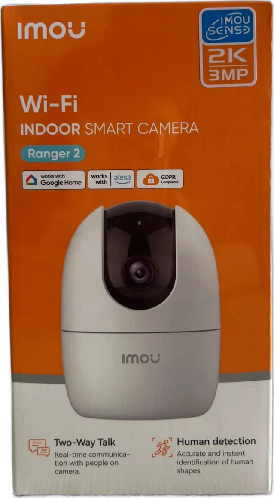

Tu combinación
Cámara WiFi de interior con giro 360°
- 2K · 3 MP
- Visión nocturna infrarroja
- Graba todo el día
Memoria microSD sugerida
128 GB ≈ 7 días
Estimación con bitrates típicos en H.265 (1080p ≈ 1 Mbps · 2K ≈ 1,4 · 2K+ ≈ 1,8 · 3K ≈ 2,2) y lo que queda libre al formatear. El valor real cambia según el modelo, la escena y la configuración.